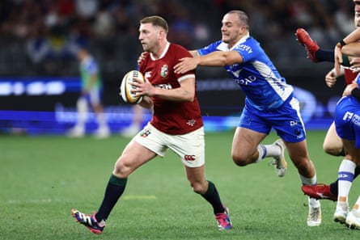

Everyone connected with the British & Irish Lions is gutted for Tomos Williams, ruled out of the tour through injury at a horribly early stage. Not only had the Gloucester scrum-half been performing well but his unfortunate early exit with a torn hamstring means the squad’s Welsh representation is now so skinny it can fit into a single pair of jeans.
While that inevitably places extra responsibility on Jac Morgan’s shoulders as the last Welsh player standing, it also tweaks the bigger picture at scrum-half. Ben White has been summoned from Scotland’s tour of New Zealand to be Williams’s replacement and now has an opportunity to vie with Alex Mitchell for a place in the matchday 23 for the best-of-three Test series.
Even at this juncture, though, the Lions’ first-choice half-back combo is all too obvious. The arranged marriage between Jamison Gibson-Park and Finn Russell has been delayed by a niggling injury to the former but the pair will be united for the first time when the Lions play the Queensland Reds on Wednesday.
The mere fact Russell is the solitary squad member asked to back up from last Saturday shows the management’s urgent desire to see their twin playmakers combine on the field. The only question now is how long the partnership will take to flourish; previously these have been rivals seeking to stifle each other’s talents.
Gibson-Park, 33, has played with numerous talented fly-halves in his time, not least Johnny Sexton who is a contrasting character to the ever-smiling Russell. It is Gibson-Park’s firm belief, though, that he and Russell could have a productive and exciting future together.
Finn Russell is the only Lion who started against Western Force on Saturday to double up.Photograph: Trevor Collens/AP
“He’s a hugely impressive player, isn’t he?” said Gibson-Park, finally recovered from the strained glute that forced him to miss the United Rugby Championship final. “Every team he’s in he has a huge impact. I can only speak from the times I’ve come up against him and the preparation time it takes to try to limit what he is able to bring. That in itself is a huge compliment to him.”
The Lions head coach, Andy Farrell, has seen enough of Gibson-Park to regard him as potentially a linchpin in his Test side. “It’s there for all to see. I don’t say this lightly: he’s 100% a world-class player and he would make any team better. His speed of play is like it is because his speed of thought is ahead of the game.”
Blend the two together and the Lions are hoping for an instant rapport, even if Gibson-Park accepts that not all great half-back pairings are forged overnight. “There is a gelling period with any 9/10 combination. We have spent some nice time together off the pitch, which is hugely important … and hopefully we can see it out there on Wednesday.”
It will be fascinating to see how they do dovetail, with Bath’s captain, Ben Spencer, having previously revealed his first interaction with Russell involved the Scot placing him in a head lock and saying, “give me the ball”. Gibson-Park joked about having had a similar experience. “He plays the game with a smile on his face and it’s refreshing to see sometimes. But you don’t see him in the meeting rooms. There is a serious side to him but when he’s out there playing ball it’s impressive to watch.”
Whatever happens, Gibson-Park is hugely relieved to be up and running. He had to undergo numerous scans – “they had every radiologist in the country trying to figure out what was going on” – but now slots into a matchday 23 featuring his Leinster colleagues Hugo Keenan and James Ryan for the first time. The nine-strong contingent of Irish players is outnumbered this time, though, by 10 Englishmen, led by the tour captain, Maro Itoje.
The Reds have named a side containing nine Wallabies and two All Blacks with the Lions braced for further Aussie trolling regarding the southern hemisphere heritage of some of their players. “I don’t really care, I am used to it at this stage,” said Gibson-Park, raised on a small island north-east of Auckland. “I have had a fair amount of it over my years with Ireland. Everybody is entitled to their opinion and that’s fine. Aussies like to wind people up, it is part of their background, but it doesn’t bother me.”
Itoje said the Lions would be taking a phlegmatic approach after copping some nationality-related flak from the matchday PA announcer in Perth. “It’s the Australian way, isn’t it? That’s a minor comment and something we don’t really pay too much attention to.”